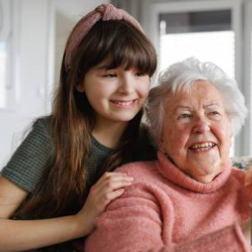
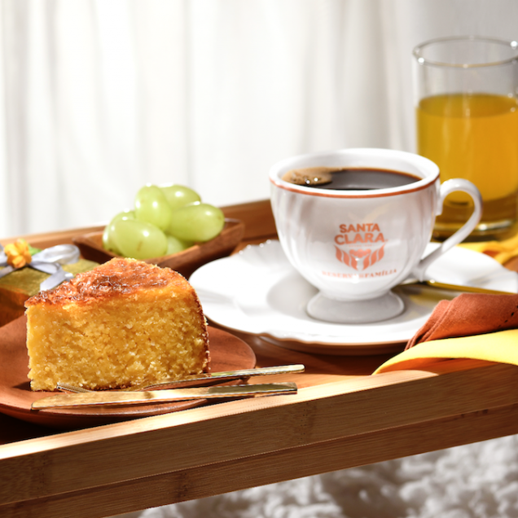

Nossa história
Tudo começou com a paixão de Millany por cafés da tarde na casa de sua querida avózinha, Dona Luíza! Ela sempre fazia os melhores bolos quando iria nos receber, acompanhados de um cházinho ou de um cafézinho, a partir daí, Millany criou vontade de fazer bolos tão bons quanto!

Qual nosso objetivo?
Nosso objetivo é, além de fazer e entregar um bolo gostoso, fazê-lo saudável, com a menor quantia de conservantes possíveis, além claro, adicionar aquele amor e carinho como ingrediente especial! Assim como Dona Luíza fazia para a dedicada Millany.
Por que nossos bolos?
Nossos bolos são de sabores variados, desde o mais simples como fubá, ou outros como formigueiro ou goiabada (o que está sendo mostrado na imagem), todos com o mínimo de conservantes possíveis, para entregar aos nossos clientes o produto mais gostoso e saudável possível!
MillaCakes, bolos feitos com amor e carinho, para você!